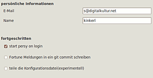
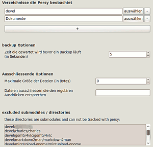
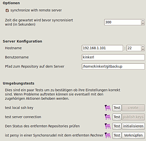

persy
Dieser Artikel wurde für die folgenden Ubuntu-Versionen getestet:
Ubuntu 14.04 Trusty Tahr
Zum Verständnis dieses Artikels sind folgende Seiten hilfreich:
persy  ist ein Programm zum Sichern von ausgewählten persönlichen Dateien und Ordnern sowie dem Synchronisieren dieser Dateien zwischen mehreren Computern. Dabei wird jede Änderung an einer Datei zunächst lokal gespeichert, und ist später wieder abrufbar. Durch zusätzliche Synchronisation von Daten mit einem entfernten Server ist Persy vergleichbar mit Cloud-Diensten wie Dropbox, aber mit einem entscheidenden Unterschied: man benötigt kein Benutzerkonto bei einem dieser Anbieter und die eigenen Daten werden nicht in irgendeine fremde Cloud kopiert, sondern verlassen nie die eigene Kontrolle.
ist ein Programm zum Sichern von ausgewählten persönlichen Dateien und Ordnern sowie dem Synchronisieren dieser Dateien zwischen mehreren Computern. Dabei wird jede Änderung an einer Datei zunächst lokal gespeichert, und ist später wieder abrufbar. Durch zusätzliche Synchronisation von Daten mit einem entfernten Server ist Persy vergleichbar mit Cloud-Diensten wie Dropbox, aber mit einem entscheidenden Unterschied: man benötigt kein Benutzerkonto bei einem dieser Anbieter und die eigenen Daten werden nicht in irgendeine fremde Cloud kopiert, sondern verlassen nie die eigene Kontrolle.
Als Basis für die inkrementelle Sicherung und Synchronisation der Daten wird Git verwendet (nicht sehr effizient für Sammlungen von Binärdateien).
Installation¶
Die Anwendung ist nicht in den offiziellen Paketquellen enthalten. Man muss daher ein "Personal Package Archiv" (PPA) [1] des Entwicklers nutzen.
PPA¶
Adresszeile zum Hinzufügen des PPAs:
ppa:tmassassin/ppa
Hinweis!
Zusätzliche Fremdquellen können das System gefährden.
Ein PPA unterstützt nicht zwangsläufig alle Ubuntu-Versionen. Weitere Informationen sind der PPA-Beschreibung des Eigentümers/Teams tmassassin zu entnehmen.
Damit Pakete aus dem PPA genutzt werden können, müssen die Paketquellen neu eingelesen werden.
Nach dem Aktualisieren der Paketquellen kann folgendes Paket installiert [2] werden:
persy (ppa)
 mit apturl
mit apturl
Paketliste zum Kopieren:
sudo apt-get install persy
sudo aptitude install persy
Konfigurieren¶
 Nach Abschluss der Installation kann der Dienst via "Anwendungen -> Zubehör -> Persy" gestartet werden. Sogleich erscheint das Persy Symbol im (oberen) Panel, initial mit einem Hinweis, dass noch kein Sicherungsprozess läuft, sondern erst entsprechende Einstellungen vorgenommen werden müssen. Benutzer von Unity sollten beachten, dass Panel Applets erst aktiviert werden müssen.
Alle Konfigurationen können im Einstellungsmenü getätigt werden. Das Menü wird über das Statussymbol im Panel gestartet. Dort können zunächst allgemeine Einstellungen getätigt werden, die das Verhalten von Persy beeinflussen. Besonders zu erwähnen ist hier die Option "starte persy bei Anmelden" (englisch: "start persy on login") da sie, wie der Name schon sagt, Persy automatisch nach der grafischen Anmeldung startet.
Jede Änderung in Persy kann mit einer fortune Nachricht versehen werden. Dies ist mehr ein kleines Spielzeug und bringt keine wirkliche Funktionalität.
Das Synchronisieren der Konfigurationsdatei ist bisher nicht einfach einzurichten und hat deswegen den Status "experimentell". Von dieser Option ist deswegen im Moment abzuraten.
Sicherung von Ordnern¶
 Als ersten Schritt müssen die Ordner, die man sichern will, zu Persy hinzugefügt werden. Dies ist im "backup"-Reiter der Einstellungen möglich. Dort kann man alle gewünschten Ordner auswählen und so der Sicherung hinzufügen. Dabei werden automatisch alle Unterordner mit eingeschlossen.
Es gibt noch weitere Konfigurationen, die je nach Anwendungsfall sinnvoll sind. Zum Beispiel kann eine Obergrenze für Dateigrößen festgelegt werden, um größere Video oder Musikdateien von der Sicherung auszuschließen.
Nachdem man mit den Einstellungen zufrieden ist, kann der Sicherungsprozess über den Menüpunkt "start/stop persy" gestartet werden.
Alle Änderungen in einem der überwachten Ordner werden in einem lokalen git-Repository abgelegt. Den Inhalt dieses Repositories und alle damit verbundenen Änderungen an den Dateien kann man sich mit den Programmen gitk oder qgit ansehen. Das Programm muss dazu aus Persy heraus gestartet werden. Ein Starter für die Programme befindet sich im Administrations-Reiter in den Einstellungen.
Synchronisieren¶
 Um Daten zwischen mehreren Computern (Clients) zu synchronisieren, wird ein Server benötigt.
Jeder Client muss dafür Persy installiert und im Konfigurationsmenü alle Konfigurationen zur Synchronisation angegeben haben. Der Server benötigt Git sowie einen laufenden SSH-Server, zu dem sich alle Clients mittels „public-key authentification“ ohne Passwort verbinden können.
Die Clients müssen sich auf einen Ordner auf dem Server einigen, über den die Sicherung und Synchronisation der Daten vorgenommen wird.
Die Einstellungen und die richtige Konfiguration des Systems aus Server und Client kann in den Synchronisationseinstellungen überprüft werden. Dort sind vier Tests eingebunden, die für eine richtige Konfiguration alle fehlerfrei durchlaufen müssen.
Problembehebung¶
Man kann, um mehr Informationen zu erlangen, Persy mit dem --verbose-Parameter starten. Dadurch werden weitere Informationen über die Aktionen auf der Kommandozeile ausgegeben. Diese können bei einem Problem sehr nützlich sein und sollte auch bei einer Fehlerbeschreibung, wenn möglich, mitgeschickt werden.
Sollten bei der Synchronisation Fehler auftreten, zum Beispiel durch eine fehlende Initialisierung des Servers, können diese eventuell durch die Aktionen in den Synchronisationseinstellungen behoben werden. Siehe dazu auch das "Synchronisieren"-Kapitel in diesem Artikel.
Links¶
sucsynct - Automatische Unison-Synchronisation über eigene (NAS) Server oder direkt mit anderen Computern/Speichermedien
Cloud-Dienste
 Übersichtsartikel
Übersichtsartikel

- Erstellt mit Inyoka
-
 2004 – 2017 ubuntuusers.de • Einige Rechte vorbehalten
2004 – 2017 ubuntuusers.de • Einige Rechte vorbehalten
Lizenz • Kontakt • Datenschutz • Impressum • Serverstatus -
Serverhousing gespendet von